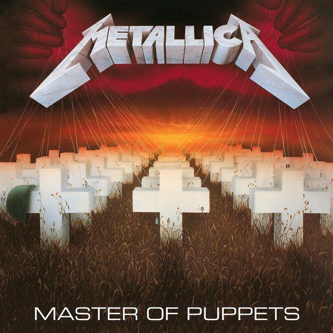

Master of Puppets
1986
A Master of Puppets a Metallica harmadik stúdióalbuma, amely 1986. március 3-án jelent meg, és sokak szerint ez a zenekar legsúlyosabb, legösszetettebb és egyben legikonikusabb műve. Az album egy sötétebb, kiforrottabb irányt képvisel a korábbi anyagokhoz képest, miközben megőrzi a zenekarra jellemző nyers energiát és technikai precizitást. A felvételek a dániai Sweet Silence stúdióban készültek, Flemming Rasmussen produceri közreműködésével, aki korábban a Ride the Lightning hangzásáért is felelt.
Ebben az időszakban a Metallica felállása James Hetfield énekes és ritmusgitáros, Lars Ulrich dobos, Kirk Hammett szólógitáros és Cliff Burton basszusgitáros volt. A Master of Puppets volt az utolsó album, amelyen Burton játszott, mielőtt 1986 szeptemberében, a zenekar svédországi turnéja során életét vesztette egy tragikus buszbalesetben. Halála hatalmas törést jelentett az együttes történetében, de ezzel együtt még inkább legendává emelte ezt az albumot.
A címadó dal, a Master of Puppets egyaránt kritikája a manipulációnak és a hatalommal való visszaélésnek, miközben olyan más kiemelkedő tételek, mint a Battery, a Welcome Home (Sanitarium) vagy a Disposable Heroes erőteljesen reflektálnak a háború, az elmebaj és az emberi pusztítás témáira. A lemez komplex dalszerkezeteivel és többtételes szerzeményeivel a thrash metal műfaj egyik csúcsteljesítményének számít, miközben hangzásában megőrizte azt a nyers erőt, ami a Metallica védjegyévé vált.
A Master of Puppets volt az első Metallica-album, amely aranylemez lett anélkül, hogy egyetlen videóklip vagy rádióbarát kislemez is készült volna róla a megjelenéskor - kizárólag a közönség ereje és a turnék nyomán vált világsikerűvé. A lemez mára a metal zene egyik legnagyobb klasszikusává nőtte ki magát, és az Egyesült Államok Kongresszusi Könyvtára is beválasztotta a kulturálisan és történelmileg jelentős felvételek közé.
| Szám | Hossz | Írók |
|---|---|---|
| Battery | 5:13 | Hetfield, Ulrich |
| Master of Puppets | 8:36 | Hetfield, Ulrich, Burton, Hammett |
| The Thing That Should Not Be | 6:37 | Hetfield, Ulrich, Hammett |
| Welcome Home (Sanitarium) | 6:28 | Hetfield, Ulrich, Hammett |
| Disposable Heroes | 8:17 | Hetfield, Ulrich, Hammett |
| Leper Messiah | 5:40 | Hetfield, Ulrich |
| Orion | 8:28 | Hetfield, Ulrich, Burton |
| Damage, Inc. | 5:33 | Hetfield, Ulrich, Burton, Mustaine |